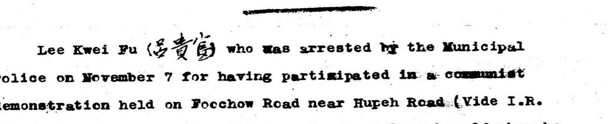

The problem
Digitised, but not legible已经数字化，却读不了
English
中文
The records of the International Settlement's police force — half a century of investigation and political-surveillance files — have been publicly available in scanned form for years. In practice they remain very hard to use.
公共租界巡捕房近半个世纪的调查与政治监视记录，扫描件早已公开多年。 但实际用起来，仍然极难检索。
The originals are carbon copies struck on a typewriter, then photographed onto microfilm. On a great many pages the ink has simply gone. Conventional OCR fails on this material — not marginally, but almost completely. Chinese-language enclosures, which appear throughout the files, were never recognised at all.
原件是打字机复写纸经缩微胶卷翻拍，很多页的字迹已经褪得几乎不存在。 传统 OCR 在这种材料上不是略有误差，而是近乎完全失效。档案中夹带的大量中文原件， 更是从未被识别过。
Sar6aer enguirics revesleu ise PS -2 rh we / Toe ucene of the :surd © is 2 Gudr.. st aby le di:e_.ai. Lage / es wuaeed ob L2AS/UC6 Se FY UMass
Further enquiries revealed the following. The scene of the murder is a Chinese style dwelling house situated at 1143/106 Yuhang Rd.

The edition
What this project produces这个项目做出来的东西
English
中文
Every page is re-transcribed from the original scan at full resolution using a vision language model, producing an English text that can actually be searched. A parallel Chinese translation is generated alongside it, for readers who need to survey the collection quickly rather than read it closely.
每一页都以原生分辨率、用视觉大模型重新转录，产出真正可检索的英文文本； 并生成中文对照译文，供需要快速浏览而非精读的读者使用。
The existing machine transcription is retained beside the new one. Where the two disagree is precisely where a human should look — a free quality signal, kept rather than discarded.
原有的机器转录一并保留。两份不一致的地方，正是需要人工核对的地方—— 这是一个免费的质检信号，所以不丢掉。
Every page carries a direct link to its scan on Internet Archive. Nothing here replaces the document; it only helps you find it.
每一页都附有 Internet Archive 上原件影像的直链。本站不替代原件， 只帮你找到它。